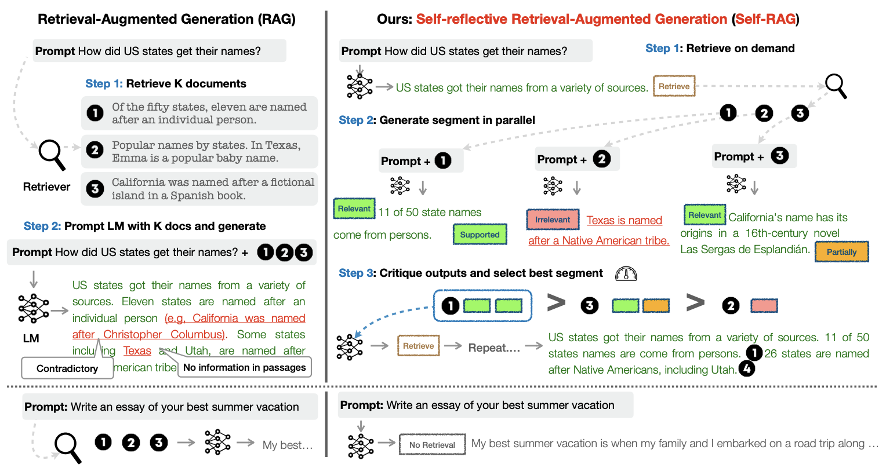

8. Generation#
The basic RAG flow invloves embedding the user query, retrieving the documents similar to the query, and generate the answer to the query using the retrieved documents. However, in that basic pipeline, RAG does not know whether or not it should retrieve the documents to answer the question, if so, from what data source, do the retrieve documents are actualy relevant to answer the question, or the generated response is correct. As a result, incorrect answers can be generated due to either incorrect retrieval or hallucinations. Therefore, the RAG pipeline should be improved so that it can “self-reflect” to decide whether ot not the retrieval should be done and the retrieved information is relevant, and “self-correct” to answer the question correctly. To do that, existing research propose Self-RAG and Coorective RAG (CRAG).
Self-RAG uses “reflection” tokens generated by a critic LM after each generation step to indicate whether or not the retrieval is required, whether or not the retrieved documents are relevant to answer the question, whether or not the generated answer is supported by the retrieved documents, and how useful the answer is.
 |
|---|
The difference between the basic RAG pipeline (left) and Self-RAG framework (right) |
Similarly, CRAG uses the confidence of the retriever to decide one of three actions, “Correct, Ambiguous, Incorrect” to decide whether the retrieved contetnt should be used as the context or do a web search to retrieve relevant context. Given a user query and the retrieved documents from any retriever, a lightweight retrieval evaluator (compared to self-RAG) is constructed to estimate the relevance score of retrieved documents to the query. The relevance score is quantified into the aforementioned three actions. If the action “Correct” is triggered, the retrieved documents will be refined into more precise knowledge strips. This refinement operation involves knowledge decomposition, filter, and recomposition. If the action “Incorrect” is triggered, the retrieved documents will be discarded. Instead, web searches are resorted to and regarded as complementary knowledge sources for corrections. Eventually, when it cannot confidently make a correct or incorrect judgment, a soft and balanced action “Ambiguous” which combines both of them is triggered. After optimizing the retrieval results, a generative model is used to generate the answer to the user query.
|
|---|
CRAG workflow |

As described above, the RAG pipeline is now improved to take decisions and act accordingly throughout the process. These kinds of RAGs usually require some kind of feedback, re-generating the question and/or re-retrieving documents. State machines are a kind of cognitive architecture that supports loops and it well suited for this: a state machine simply lets us define a set of steps (e.g., retrieval, grade documents, re-write query) and set the transitions options between them. Therefore, next we implement this new RAG pipeline using LangGraphs, a recently introduced feature by Langchain according to the following diagram.
|
|---|
New RAG Workflow: A simplified verision of CRAG (For more information, read the langchain blog post.) |

%load_ext dotenv
%dotenv secrets/secrets.env
from langchain.text_splitter import RecursiveCharacterTextSplitter
from langchain_community.document_loaders import WebBaseLoader
from langchain_community.vectorstores import Chroma
from langchain_openai import OpenAIEmbeddings
from langchain_openai import ChatOpenAI
from langchain.prompts import ChatPromptTemplate
First we initialize our retriever (Functionality of the node “Retrieve”).
urls = [
"https://lilianweng.github.io/posts/2023-06-23-agent/",
"https://lilianweng.github.io/posts/2023-03-15-prompt-engineering/",
"https://lilianweng.github.io/posts/2023-10-25-adv-attack-llm/",
]
docs = [WebBaseLoader(url).load() for url in urls]
docs_list = [item for sublist in docs for item in sublist]
text_splitter = RecursiveCharacterTextSplitter.from_tiktoken_encoder(
chunk_size=250, chunk_overlap=30
)
doc_splits = text_splitter.split_documents(docs_list)
# Add to vectorDB
vectorstore = Chroma.from_documents(
documents=doc_splits,
collection_name="rag-chroma",
embedding=OpenAIEmbeddings(),
)
retriever = vectorstore.as_retriever()
Secondly we define the functionality for the “Grade” node. To get the grading result, we first define a Pydantic model Grader. It has one variable grade dedicated to indicating whether or not the retrieved document for the question is relevant. Using the model, we create the grading_chain that returns a Grader object.
from langchain.pydantic_v1 import BaseModel, Field
from typing import Literal
question = "What is agent memory?"
class Grader(BaseModel):
"""Returns a binary value 'yes' or 'no' based on the relevancy of the document to the question"""
grade: Literal["yes", "no"] = Field(..., description="The relevancy of the document to the question. 'yes' if relevant, 'no' if not relevant")
llm = ChatOpenAI(model='gpt-4', temperature=0)
grading_llm = llm.with_structured_output(Grader)
grading_prompt = ChatPromptTemplate.from_messages(
[
('system', """You are a grader assessing relevance of a retrieved document to a user question. \n
If the document contains keyword(s) or semantic meaning related to the question, grade it as relevant. \n
Give a binary score 'yes' or 'no' score to indicate whether the document is relevant to the question."""),
('user', "Retrieved document: \n\n {document} \n\n User question: {question}"),
]
)
docs = retriever.get_relevant_documents(question)
doc_txt = docs[1].page_content
grading_chain = grading_prompt | grading_llm
grading_chain.invoke({'document': doc_txt, 'question': question})
/Users/sakunaharinda/Documents/Repositories/ragatouille/venv/lib/python3.12/site-packages/langchain_core/_api/deprecation.py:119: LangChainDeprecationWarning: The method `BaseRetriever.get_relevant_documents` was deprecated in langchain-core 0.1.46 and will be removed in 0.3.0. Use invoke instead.
warn_deprecated(
Grader(grade='yes')
If we ask a question that cannot be answered using the documents embedded in the vector store, the chain returns a Grader object with the grade no. If we want get the grade we can call the Grader.grade.
grading_chain.invoke({'document': doc_txt, 'question':'What is access control?'})
Grader(grade='no')
Thirdly, we define the functionality of the “Generate” node.
from langchain import hub
from langchain_core.output_parsers import StrOutputParser
prompt = hub.pull("rlm/rag-prompt")
generation_chain = prompt | llm | StrOutputParser()
generation_chain.invoke({'context': doc_txt, 'question': question})
"Agent memory refers to a long-term memory module that records a comprehensive list of an agent's experiences in natural language. This memory is used to inform the agent's behavior based on the relevance, recency, and importance of the events. It also includes a reflection mechanism that synthesizes memories into higher-level inferences over time to guide the agent's future behavior."
Fourthly, we define the functionality of the “Re-write query” as a chain.
system = """You a question re-writer that converts an input question to a better version that is optimized \n
for web search. Look at the input and try to reason about the underlying semantic intent / meaning."""
re_write_prompt = ChatPromptTemplate.from_messages(
[
("system", system),
(
"human",
"Here is the initial question: \n\n {question} \n Formulate an improved question.",
),
]
)
re_write_chain = re_write_prompt | llm | StrOutputParser()
re_write_chain.invoke({"question": "agent memory"})
'"What is agent memory in computer science?"'
Finally, we initialize the Tavily web search tool as the “Web search” node.
from langchain_community.tools.tavily_search import TavilySearchResults
web_search_tool = TavilySearchResults(k=3)
After defining the chains required for the functionalities of each node, we then define the GraphState to be used by LangGraph. In LangGraph, a graph is parameterized by a state object that it passes around to each node. Remember that each node then returns operations to update that state. These operations can either SET specific attributes on the state (e.g. overwrite the existing values) or ADD to the existing attribute. Whether to set or add is denoted by annotating the state object you construct the graph with. The default operation is SET, which overrides the existing values of the state.
Here our state is a TypedDict with 4 keys indicating the question, documents retrieved for the question, whether of not search the web, and the final LLM generation.
See also
For more information about the graph states refer the documentation.
from typing_extensions import TypedDict
class GraphState(TypedDict):
"""
Represents the state of our graph.
Attributes:
question: question
generation: LLM generation
search_web: whether to search the web
documents: list of documents
"""
question: str
documents: list[str]
search_web: str
generation: str
Through each node, we update the state accordingly. We represent “nodes” in the graph as methods, that we create below. For instance, the “Retrieve” node is represented as the retrieve method, that retrieves the documents according to the graph state’s question field and updates the documents field of the state. Similarly we create a method for each node that use the defined chains to perform a specific task, update the state, and return it.
from langchain.schema import Document
def retrieve(state):
"""
Retrieve documents related to the question
Args:
state (dict): The current graph state
Returns:
state (dict): New key added to state, documents, that contains retrieved documents
"""
print('> 📃 Retrieving documents...')
question = state['question']
docs = retriever.get_relevant_documents(question)
state['documents'] = [doc.page_content for doc in docs]
return state
def grade(state):
"""
Determines whether the retrieved documents are relevant to the question.
Args:
state (dict): The current graph state
Returns:
state (dict): Updates documents key with only filtered relevant documents
"""
question = state['question']
documents = state['documents']
search_web = "yes"
print('> 🔍 Grading documents...')
filtered_docs = []
for i,doc in enumerate(documents):
grade = grading_chain.invoke({'document': doc, 'question': question})
if grade.grade == 'yes':
print(f'> 📝 \033[92mDocument {i} is relevant\033[0m')
filtered_docs.append(doc)
search_web = 'no'
else:
print(f'> 📝 \033[91mDocument {i} is irrelevant\033[0m')
state['documents'] = filtered_docs
state['search_web'] = search_web
return state
def rewrite_query(state):
"""
Transform the query to produce a better question.
Args:
state (dict): The current graph state
Returns:
state (dict): Updates question key with a re-phrased question
"""
print('> ✍🏻 Rewriting the question...')
question = state['question']
new_question = re_write_chain.invoke({'question': question})
state['question'] = new_question
return state
def web_search(state):
"""
Web search based on the re-phrased question.
Args:
state (dict): The current graph state
Returns:
state (dict): Updates documents key with appended web results
"""
print('> 🌎 Web searching...')
question = state["question"]
documents = state["documents"]
# Web search
docs = web_search_tool.invoke({"query": question})
web_results = "\n".join([d["content"] for d in docs])
web_results = Document(page_content=web_results)
documents.append(web_results)
state["documents"] = documents
return state
def generate(state):
"""
Generate answer
Args:
state (dict): The current graph state
Returns:
state (dict): New key added to state, generation, that contains LLM generation
"""
print("> 🤖 Generating the answer...")
question = state["question"]
documents = state["documents"]
# RAG generation
generation = generation_chain.invoke({"context": documents, "question": question})
state["generation"] = generation
return state
We will also need to define some edges. Some of these edges may be conditional. The reason they are conditional is that the destination depends on the contents of the graph’s state. For instance, after grading the retrieved documents, our RAG pipeline should decide whether to use the retrieved documents to generate the answer or to re-write the query for a web search. It depends on the search_web property of the graph’s state which is updated within the grade node. Therefore, we define our one and only conditional edge decide_to_generate which outputs name of the next node to go based on the grading decision.
def decide_to_generate(state):
"""
Determines whether to generate an answer, or re-generate a question.
Args:
state (dict): The current graph state
Returns: Method name to execute next
"""
print("> ❓ Deciding to generate...")
search_web = state["search_web"]
if search_web == "yes":
# All documents have been filtered check_relevance
# We will re-generate a new query
print("> 💡 Decision: \033[91mAll the retrieved documents are irrelevant\033[0m")
return "rewrite_query"
else:
# We have relevant documents, so generate answer
print("> 💡 Decision: \033[92mRelevant documents found\033[0m")
return "generate"
After defining all the nodes and edges, we finally define our graph workflow that passes the GraphState node to node via edges. We start by adding each node to the graph. Then we define the entry_point (i.e., the root node) that has only one outward edge. From the entry point we connect each node using add_edge with the source node name and target node name. In conditional edges, we use add_conditional_edges to specify the source node, the decision method, and what node to point based on the output of the decision method as a dictionary. In our case, if the decide_to_generate outputs rewrite_query, an edge will connect the grade and rewrite_query nodes. On the other hand, if the decide_to_generate outputs generate, an edge will connect the grade and generate nodes. We complete defining our graph with the generate node which does not have any outward nodes. So the last edge’s target node is a special node named, END.
After creating the graph we compile it using the compile() method. Compiled graph will take the input and go through all the required nodes in order to reach the END. We stream the graph’s output using the stream() method so that we can print to see what is happening under the hood.
from langgraph.graph import END, StateGraph
# Provide the state graph
workflow = StateGraph(GraphState)
# Define the nodes
workflow.add_node("retrieve", retrieve) # retrieve
workflow.add_node("grade", grade) # grade documents
workflow.add_node("generate", generate) # generatae
workflow.add_node("rewrite_query", rewrite_query) # rewrite_query
workflow.add_node("web_search", web_search) # web search
# Build graph
workflow.set_entry_point("retrieve")
workflow.add_edge("retrieve", "grade")
workflow.add_conditional_edges(
"grade",
decide_to_generate,
{
"rewrite_query": "rewrite_query",
"generate": "generate",
},
)
workflow.add_edge("rewrite_query", "web_search")
workflow.add_edge("web_search", "generate")
workflow.add_edge("generate", END)
# Compile
app = workflow.compile()
def run_pipeline(question):
inputs = {"question": question}
for output in app.stream(inputs):
for key, value in output.items():
if key == 'generate':
print()
print(f'Question: {inputs["question"]}')
print(f"Answer: {value['generation']}")
run_pipeline("What is agent memory?")
> 📃 Retrieving documents...
> 🔍 Grading documents...
> 📝 Document 0 is relevant
> 📝 Document 1 is relevant
> 📝 Document 2 is relevant
> 📝 Document 3 is irrelevant
> ❓ Deciding to generate...
> 💡 Decision: Relevant documents found
> 🤖 Generating the answer...
Question: What is agent memory?
Answer: Agent memory refers to the capability of an agent to retain and recall information over time. It can be short-term, used for in-context learning, or long-term, often leveraging an external database to store and retrieve information over extended periods. This memory allows the agent to behave based on past experiences and interact with other agents.
Tha LangSmith trace for the above workflow will look like this.
run_pipeline("Who is Tom Brady?")
> 📃 Retrieving documents...
> 🔍 Grading documents...
> 📝 Document 0 is irrelevant
> 📝 Document 1 is irrelevant
> 📝 Document 2 is irrelevant
> 📝 Document 3 is irrelevant
> ❓ Deciding to generate...
> 💡 Decision: All the retrieved documents are irrelevant
> ✍🏻 Rewriting the question...
> 🌎 Web searching...
> 🤖 Generating the answer...
Question: Who is Tom Brady?
Answer: Tom Brady is a professional NFL football player, born on August 3, 1977. He had to fight to get into the NFL and played for the University of Michigan during his college days. Brady has had a successful career, with many achievements including leading the Patriots to a Super Bowl victory, setting an NFL record with 21 straight wins, and becoming the first player ever to win six Super Bowls. He was also involved in the 'Deflategate' scandal, where he was suspended for four games. Despite this, he has continued to excel in his sport.
The LangSmith trace of the above workflow will look like this.